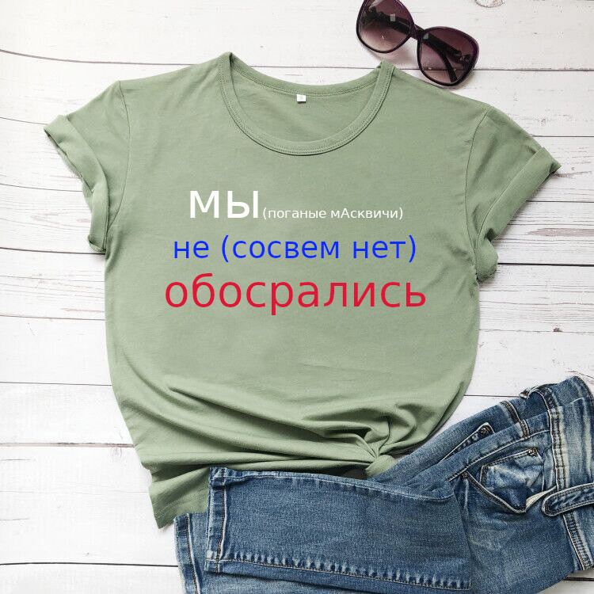

Россия это настоящий концлагерь
Russia is a real concentration camp
Потомство гитлера, пустило свои корни в поганой мАскве. Прибежище нацистов и всех чмошников планеты. мАсква настолько крысиное гнездышко что им даже в аду места не будет. Для коренных мАсквичей “военных преступников третьего рейха”, гитлера, сталина в аду существует один особый котел с чернокожими коммунистическими бэдесемщиками. мАсква - дно ада, чмошнее лживой мАсквы нету ничего. Все крысы и лживые мрази прогрызли себе дыру в этот крысиный бункер. мАсквичи полные ушепки знают только пытки, издевательства. Новым мАсковским сотрудникам дают ознакомиться с инструкцией как не упасть в голодный обморок работая за станком отобранным в 1945 году у нацистской Германии. Армия мАсквы голодных обмороков. Шваль планеты. Поганый гитлер отменил смертную казнь, потому что нужны были рабы, чтобы люди мучились намного дольше. Аналогично мАсковский закон отменяет смертную казнь, чтобы пытать людей мучить, морить. Крысина мАсква, каждый мАсквич крыса. Смертная казнь сравнивается с помилованием. Потому что под пытками на допросе любой человек признается в чем угодно. Кроме пыток в москве вообще ничего не знают. Адская мАсква - это голодный обморок нищих людей, без образования медицины, в каменном веке люди были намного приличнее мАсквичей!
The offspring of Hitler, took root in the filthy maskva. The refuge of the Nazis and all the pranksters of the planet. Masqua is such a rat's nest that they won't even have a place in hell. For the indigenous Muscovites of the “war criminals of the Third Reich”, Hitler, Stalin, there is one special cauldron in hell with black communist badesemshchiks. Maskva is the bottom of hell, there is nothing more deceitful than a false maskva. All the rats and lying scum have gnawed their way into this rat bunker. Muscovites full of ears know only torture and bullying. New Muscovite employees are given instructions on how not to faint from hunger while working on a machine tool taken from Nazi Germany in 1945. An army of hungry swoons. The trash of the planet. Filthy Hitler abolished the death penalty, because slaves were needed to make people suffer much longer. Similarly, the Maskovsky law abolishes the death penalty in order to torture people, torture them, starve them. Rat maskva, every maskvich is a rat. The death penalty is compared to a pardon. Because under torture during interrogation, any person confesses to anything. Apart from torture, Moscow knows nothing at all. Hellish maskwa is a hungry swoon of poor people, without the education of medicine, in the Stone Age people were much more decent than maskviches!
Если кажется это не правда? Тогда спросите у Украинцев, которые встретились с москвой лицом к лицу. И видят всю нищету, немощь и жалкие угрозы. Поганая мАсква - это не Россия!
If it doesn't seem true? Then ask the Ukrainians who met with Moscow face to face. And they see all the poverty, weakness and pathetic threats. Filthy maskva is not Russia!
 Как гитлер обасрался на всю европу, мАсква обасралась на весь мир и футболка с надписью: “мне не стыдно что я не обасрался”. Была в свободной продажи. Ну ладно, ок! Понятно, только зачем вообще такая надпись???
As Hitler crap all over Europe, Moscow crap all over the world and a T-shirt with the inscription: "I'm not ashamed that I didn't crap." Was in free sale. Okay, okay! It is clear, but why such an inscription at all ???
On the T-shirt is written in Russian: "we did not crap."
Система комментирования SigComments